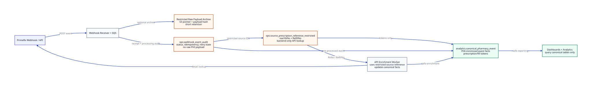

Canonical Event Database Schema
MVP database design for storing PrimeRx webhook/API events as audit-ready, PHI-minimized canonical records.
Purpose
This document defines the first tenant-schema database model for the webhook processing pipeline. It gives the processor Lambda a clear destination for processed events without mixing raw PrimeRx payloads, restricted source identifiers, and dashboard-facing records.
The core rule: store real RxNo and RefillNo only in restricted operational tables. Dashboards and later analytics use prescription_reference_token and fill_reference_token.
Current scope stops at saving webhook data into canonical format, upserting safe drug/payer lookup rows, storing event payment components, and letting the API enrichment worker update safe missing fields. This is not the full reporting warehouse or ML feature model.
MVP Decisions
| Decision | Recommendation | Reason |
|---|---|---|
| Database | PostgreSQL-compatible database such as RDS PostgreSQL or Aurora PostgreSQL | Works well for structured audit, canonical records, and API enrichment updates. |
| Tenant isolation | One PostgreSQL schema per tenant, for example tenant_acme_pharmacy_group. All tenant-owned tables live inside that tenant schema. |
Creates a clear SaaS isolation boundary and avoids splitting one tenant's data across multiple logical schemas. |
| Table zones | Restricted, lookup, ingestion, canonical, and payment tables are separated by table responsibility, not by database schema. | Prevents accidental mixing of source identifiers and dashboard-facing data while keeping each tenant's data together. |
| Raw payload retention | Optional restricted S3 archive with DB pointer and payload hash | Allows replay/troubleshooting without copying raw PHI into canonical dashboard tables. |
| Source identifiers | Store real RxNo and RefillNo in source_rx_reference |
API enrichment needs real vendor identifiers. Tokens alone cannot call PrimeRx. |
| Canonical model | Use one event table plus normalized drug, payer, and event payment rows |
Keeps one source of truth for safe drug and payer attributes. Exact original webhook/API values remain available only through restricted raw archive when retention is enabled. |
| Cash payments | Store as payment_type = 'cash' with payer_id = null |
Cash is not an insurance payer, so it should not create a payer dimension record. |
Schema Boundary Diagram


Tables
tenant
One row per pharmacy group or customer tenant. Every tenant-owned row must belong to a tenant, even though the schema itself is already tenant-specific.
pharmacy
One row per store/pharmacy location. Stores source pharmacy IDs, NPI/NCPDP when available, and tenant ownership.
drug
Normalized drug lookup rows upserted from webhook/API fields such as NDC, product ID, drug name, strength, form, and manufacturer.
payer
Normalized insurance payer lookup rows upserted from payer name, BIN, PCN, and source insurance code when available.
raw_payload_archive
Restricted short-term archive containing the original source JSON plus hash, size, source, and retention metadata. It is never a dashboard or normal API data source.
ingestion_event
Lifecycle record for each received event: received, queued, processing, processed, failed, duplicate, or needs enrichment.
source_rx_reference
Restricted source lookup table containing real RxNo and RefillNo. Used by backend jobs for API enrichment and reconciliation.
pharmacy_event
PHI-minimized event facts used by dashboards, reconciliation, and API enrichment updates.
event_payment
Bridge table between pharmacy events and payers. One row per event payment component: primary insurance, secondary insurance, tertiary insurance, patient pay, cash, or other payment type.
Canonical Event Fields
| Field group | Columns | Notes |
|---|---|---|
| Tenant/store | tenant_id, pharmacy_id |
Required on every row. These support defense-in-depth inside the tenant schema, store-level dashboards, and easier audit/reconciliation. |
| Lineage | ingestion_event_id, source_system, source_event_type |
Links each event row back to the processing ingestion record. |
| Canonical type | canonical_event_type |
Normalized event type such as claim_billed, claim_reversed, or claim_rejected. |
| Safe continuity | prescription_reference_token, fill_reference_token |
Tokens only. Real source identifiers stay in source_rx_reference, which is backend-only. |
| Status | rx_status, claim_status, fulfillment_status, queue_status |
Nullable because not every event includes every status. |
| Drug/payer/prescriber | drug_id, prescriber_npi |
Drug details are read from drug. Payer details are reached through event_payment to payer. |
| Prescription/fill details | days_supply, quantity_ordered, quantity_dispensed, quantity_remaining, date_filled, date_picked_up |
Safe fill-level facts from webhook/API. Direct patient identifiers remain excluded. |
| Financial | total_amount, ingredient_cost_amount, dispensing_fee_amount, amount_due |
Event-level Rx/cost facts live on the canonical event. Payer and patient payment amounts live in event_payment. |
| Payment breakdown | payment_type, payer_id, payer_sequence, paid_amount |
Payer is linked through event_payment: pharmacy_event.id to payment row, then payment payer_id to payer. Cash rows use payment_type = 'cash' and payer_id = null. |
| Quality | enrichment_status, data_quality_status |
Allows dashboards to distinguish complete rows from partial webhook-only rows. |
Token Strategy
The processor should generate stable HMAC tokens using a secret owned by the backend, not a plain SHA hash. Tokens must include tenant and pharmacy context so the same source identifier in two tenants does not produce the same token.
prescription_reference_token = HMAC_SHA256(secret, tenant_id + pharmacy_id + rx_no)
fill_reference_token = HMAC_SHA256(secret, tenant_id + pharmacy_id + rx_no + refill_no)Idempotency Strategy
The ingestion_event table owns idempotency. The processor should create one pharmacy_event row only after the event is accepted as non-duplicate.
- Use PrimeRx event ID if PrimeRx provides one.
- Otherwise use tenant, pharmacy, source event type, source event timestamp,
RxNo, andRefillNo. - If no stable event identity exists, use the receiver request ID and raw payload hash as fallback.
The database enforces unique (tenant_id, source_system, idempotency_key) on ingestion_event.
PHI Exclusion Rules
The canonical event tables must not store patient first name, patient last name, full DOB, full address, phone number, email, driver license, insurance member ID, prescription images, or free-text notes.
If a field is needed for debugging or API lookup, it belongs in the restricted operational layer, not in pharmacy_event.
Access Model
| Role | Allowed access | Not allowed |
|---|---|---|
| Webhook processor | Write ingestion_event, source_rx_reference, drug, payer, pharmacy_event, and event_payment |
Logging raw payloads or exposing source identifiers to dashboards |
| API enrichment worker | Read restricted source references, call PrimeRx API, write safe enriched fields back to lookup, canonical, and payment records | Writing direct patient identifiers to canonical/dashboard tables |
| Dashboard/API application | Read dashboard-safe lookup, canonical, and payment records from the authenticated user's tenant schema and authorized pharmacy scope | Reading source_rx_reference or raw payload archive |
| Data engineer | Read canonical records after access approval | Using raw PrimeRx payloads or restricted source references as dashboard source tables |
For production, the application must select the tenant schema from authenticated tenant context, never from untrusted request parameters. The MVP schema still includes tenant_id and pharmacy_id on every table as defense-in-depth and to keep store-level authorization explicit.
Example Processing Write
- Receiver writes an
ingestion_eventrow with statusreceivedand optionally stores raw payload in restricted archive. - Processor validates payload and creates/updates
source_rx_referencewith realRxNo,RefillNo, and tokens. - Processor updates ingestion status to
processing. - Processor suppresses PHI, upserts safe drug/payer lookup rows, and maps safe fields into
pharmacy_event. - Processor writes event payment rows for insurance, patient pay, cash, or other payment components.
- Processor updates ingestion status to
processed,failed,duplicate, orneeds_enrichment.
SQL Draft
The executable first-pass DDL lives here: schemas/mvp_canonical_event_schema.sql.
The incremental migration for an already-created local design database lives here: schemas/migrations/2026-07-24-drug-payer-event-fields.sql.
The cleanup migration that removes duplicate canonical drug/payer snapshot columns lives here: schemas/migrations/2026-07-24-remove-canonical-drug-payer-snapshots.sql.
The rename migration that moves early draft table names to the current simpler names lives here: schemas/migrations/2026-08-29-rename-event-model-tables.sql.
The migration that applies the MVP raw payload archive retention default lives here: schemas/migrations/2026-07-29-raw-payload-retention-default.sql.
Detailed field definitions and table access rules are here: database/canonical-event-table-dictionary.html.
This SQL is a starting point for engineering review. Before production use, the team should add tenant schema provisioning, migrations, database roles, backups, schema-level access controls, and environment-specific retention settings.
Raw Payload Retention Decision
For MVP, restricted raw payload archive records should default to a 30-day retention window. This gives the team a short replay/debug window without turning raw webhook/API payloads into a long-term product data store.
This is an engineering default for MVP review only. Before production, legal/security should confirm whether 30 days is acceptable, whether any customer agreement changes it, and whether production deletion should be enforced by S3 lifecycle policy, database cleanup job, or both.
Open Questions
- Does PrimeRx provide a stable webhook event ID?
- Does every prescription-level event include store/pharmacy identity,
RxNo, andRefillNo? - Are financial fields reliable in webhooks, or should they be treated as API-enriched fields?
- Should production enforce the 30-day raw payload retention policy through S3 lifecycle rules, a database cleanup job, or both?
- When will security approve or reject patient-level pseudonymous continuity for refill/adherence analytics?